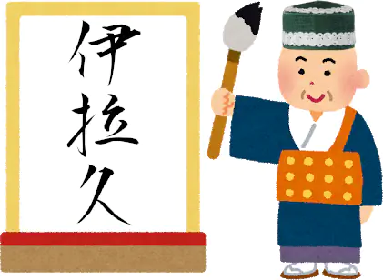
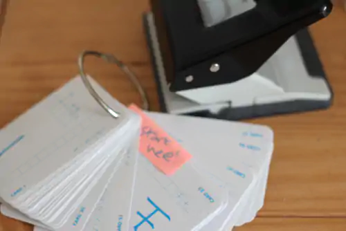

March 21, 2024 — Tatsumoto
Countless language-learning methods exist,
and each of them tells you to do different things.
Some methods are effective, but many are not.
Unfortunately,
the Internet is brimming with advice that might sound good
but often leads to little progress.
If you want to reach mastery in a foreign language,
you don't want to waste precious time on ineffective methods.
Read more...
March 11, 2024 — Tatsumoto
The Cross Profile Search and Import add-on
is a tool that helps you maintain a neat,
uncluttered main profile while still having access to an extensive sentence bank.
This tool allows you to store your sentence bank
in a separate profile which is not synchronized with AnkiWeb,
and then easily search and import cards into your main profile when required.
In doing so,
it keeps your main profile tidy
while sparing AnkiWeb servers from hefty media uploads.
Read more...
October 19, 2023 — Tatsumoto
As learners,
we can divide our target language into domains
to better navigate the territory.
Being aware of language domains helps find the most optimal path to fluency.
Read more...
July 13, 2023 — Tatsumoto
Managing time effectively is crucial to accomplish tasks and maintain productivity.
Timeboxing is a popular technique that helps people organize their time.
In this article,
we will explore the concept of timeboxing,
how timeboxing can help with language learning,
and discuss timeboxing software that AJATTers use.
Read more...
April 12, 2023 — Tatsumoto
Anki
can be used
to learn a variety of different subjects,
including languages.
What makes Anki such a fantastic tool for Japanese learners is the vast array of plugins or "add-ons"
that extend its functionality.
One of the most useful add-ons for learning Japanese is
AJT Japanese.
Its main features include
adding furigana,
adding pitch accent information,
and adding pronunciation audio files to Anki cards.
Read more...
March 22, 2023 — Tatsumoto
GoldenDict-NG is a libre dictionary application for GNU/Linux and other OSes.
Like Qolibri, it lets you search multiple dictionaries at the same time
so for every word you look up you immediately get a number of definitions.
GoldenDict-NG is a great tool for language learners,
and it becomes especially helpful
when one switches from bilingual dictionaries to monolingual dictionaries.
It can aid during the monolingual transition
thanks to the ability to look up many words at once in separate tabs,
simplifying recursive look-ups.
Read more...
March 17, 2023 — Tatsumoto
When we talk about immersion, we usually divide it into active and passive.
Active immersion requires full attention to the content
and can be practiced through reading and watching content in the target language.
Passive immersion means listening to the language while engaging in other activities.
When listening passively you're not fully focused on the content,
instead you're doing something else
while having the speech in your target language play in the background.
Read more...
March 17, 2023 — Tatsumoto
Active immersion is a crucial part of language learning
and requires full attention to the content you are consuming.
In this article,
we will look in more detail at what active immersion is and how to practice it.
We will also discuss the different types of active immersion,
and how to deal with the ambiguity that can arise when immersing.
Read more...
March 09, 2023 — Tatsumoto
Reading a book is a simple process.
You don't need much technology to read a book.
In contrast,
when watching a movie,
you need software that can create Anki cards from the subtitles.
Or,
when reading manga,
you need an OCR tool to extract text from the images.
But to read a book, all you may need is
a dictionary on hand to look up unfamiliar words.
And a program that can open and display books, of course.
If you have a paper book, you don't even need a computer.
Nevertheless, there are some tips I'd like to discuss here.
In this article, we'll discuss a few tips and tricks to help make
reading books in Japanese easier and more enjoyable.
Read more...
September 30, 2022 — Tatsumoto
In this article let's talk about passing text between applications.
Usually people simply select and copy-paste text from one window to the other,
but there's a way to make it faster by using the concept of plumbing.
Plumbing is something that can make using a computer so much more convenient and fast.
I think everybody should use it.
Read more...
August 31, 2022 — Tatsumoto
AJATT
targets people who want to reach a high level in the language and truly become fluent.
One of the most important parts of AJATT is
immersing yourself in Japanese as close to 24 hours a day as possible,
combining that with spaced repetition and other technology.
Immersion is quite important, we already know that.
Let's figure out how much immersion is necessary.
Read more...
July 13, 2022 — Tatsumoto
A Locale
is a set of information that most programs use
for determining country and language specific settings.
Since you're learning Japanese,
generate and enable the Japanese locale on your system.
Read more...
June 24, 2022 — Tatsumoto
Watching movies and TV shows counts towards active immersion
and requires full attention to the content.
We can apply a little optimization to condense active immersion.
This small trick helps if you're watching something boring or if you're tight on time.
Read more...
June 13, 2022 — Tatsumoto
Since in this guide we are going to use Anki to study our target language,
let's talk about how it works.
Read more...
June 12, 2022 — Tatsumoto
To study efficiently
and help you keep track of the learning process
one of the first things you're going to want to do is
obtain a spaced repetition system.
In this article let's cover the theory behind spaced repetition,
why you need it
and what system to use.
Read more...
March 31, 2022 — Tatsumoto
What's grammar?
Should you learn grammar?
How to learn grammar?
Let's answer these question in this article.
Read more...
March 20, 2022 — Tatsumoto
YouTube is a popular website where people can upload and watch videos.
Through watching YouTube you can immerse with native Japanese content.
Such content can be of particular interest to people
who want to understand colloquial Japanese,
speech with a lot of mumbling, slurs and slang.
There are many language-dense streams and podcasts on YouTube
that can be used for background listening.
You can also find news channels with more formal speech.
Read more...
December 28, 2021 — Tatsumoto
Ever wondered how Japanese people type?
No one knows the answer.
Some people say that they use huge keyboards with hundreds of keys like on the picture.
Luckily for us, we don't have to imitate Japanese people and buy a keyboard like that.
There are programs called Input Method Editors (IMEs)
that help us do the same thing on a regular computer keyboard.
With an IME you type Latin letters
and the software automatically converts them to Japanese characters.
Typing words in a dictionary,
searching the web
or talking to people who pretend to be Japanese on the Internet
all require being able to input Japanese characters.
If you're serious about learning Japanese,
you need to learn how to do it.
Read more...
November 30, 2021 — Tatsumoto
Sentence mining is a process of extracting sentences
that contain unknown words
from the content you read, watch or listen to in your target language
and adding them to Anki in a form of targeted sentence cards (TSCs).
You put an example sentence in the question field
and the definitions, pictures and pronunciations in the answer field.
Sentence mining and immersion are the two most important components of our method.
Immersion provides you with new vocabulary to be mined,
and mined sentences become fuel that advances your language learning.
Finding your own sentences is much more fun than learning from a premade deck,
or, god forbid, a textbook.
Because you're creating Anki cards out of vocabulary found in your immersion,
you're always learning what is relevant to you.
Once you reach this stage, it is way harder to quit Japanese,
as the foundation is already in place.
Read more...
October 13, 2021 — Tatsumoto
Reading target language subtitles
is a great way to improve at your target language
and grow your vocabulary when watching movies and TV-shows.
Often,
after downloading an archive with subtitles for a show
you find that the subtitles are not in sync with the video files you have on your computer.
In this article let's discuss what you can do to sync them.
Read more...
September 10, 2021 — Tatsumoto
Let's define a "target" as any unknown piece of information
in a given sentence in a foreign language.
It can be either a word or a grammar structure.
We can divide all sentences we encounter while immersing in our target language into three groups:
0T, zero-target.
Sentences that don't contain anything you don't already know.1T, one-target.
Sentences that contain one unknown piece of information.2T+, MT, multi-target.
Sentences that contain multiple unknown pieces of information.
Read more...
June 20, 2021 — Tatsumoto
On a freshly installed GNU/Linux distro
Japanese characters may not look pretty.
This can be fixed by installing
Japanese fonts
and creating a proper
Fontconfig
configuration file.
Read more...
June 17, 2021 — Tatsumoto
This is Tatsumoto's AJATT FAQ.
You can search questions you're interested in if you press Ctrl+f.
Note: This article has been replaced and will not be updated anymore.
All updates and additions will be posted here.
Read more...
June 05, 2021 — Tatsumoto
Sentence mining
is the process of picking sentences from your immersion and making Anki cards.
Each sentence has one unknown piece of information,
which is referred to as target word.
To mine sentences from movies and TV-shows
you are going to need the mpv video player,
and a plugin for mpv called Mpvacious.
Read more...
May 25, 2021 — Tatsumoto
Unlike kana which you can learn in a matter of few days no matter what method you pick,
learning kanji is apparently more difficult, and there are many methods of doing it.
Read more...
May 17, 2021 — Tatsumoto
This is the Ajatt-Tools Resources List.
With the help of our community we've gathered the links to help you in your Japanese studies.
We prioritize libre software and content that you can download for free.
Everyone is welcome to suggest more resources in our chat.
The third party resources below
may contain what Tatsumoto considers to be ineffective language learning advice.
If you find something that contradicts what's written in this guide,
assume it's wrong or verify by asking people in our chat.
Read more...
May 03, 2021 — Tatsumoto
Congratulations! You've taken your first step towards learning Japanese!
This is Tatsumoto's Guide to Learning Japanese.
I'm Tatsumoto.
This guide is for people
who want to learn Japanese solely through self-study.
Do you want to teach yourself Japanese?
Do you want to reach a high level of fluency fast?
Then this site is right for you.
Read more...
April 24, 2021 — Tatsumoto
Rikaitan is a browser extension
with a pop-up dictionary
that allows you to look up unknown words with the hover of a mouse.
On top of that Rikaitan can be set up to create Anki cards from the words which you look up.
The process of picking sentences from your immersion
and making Anki cards is called sentence-mining or sentence-picking.
Each mined sentence has to contain one unknown piece of information,
which is referred to as target word.
You don't necessarily have to pick an entire sentence,
but if you're a TSC user it is not necessary to keep mined items short.
When you're out in the wild picking sentences, select the ones that are interesting to you.
Your goal is not to mine every word.
Read more...
April 13, 2021 — Tatsumoto
Passive immersion means listening to the language while in idle activities.
When listening passively you're not fully focused on the content,
instead you're doing something else
while having the speech in your target language play in the background.
Passive listening is one of the key components of the AJATT method,
so it is important to make it as convenient as possible.
If preparing immersion content is tedious, you are not going to do it.
This article covers technology for passive immersion.
Read more...
April 01, 2021 — Tatsumoto
When we read manga,
sometimes there's a need to quickly
OCR
a portion of the screen
to look up new words and add sentences to Anki.
To do so, you're going to use an optical character recognition program and a few helper tools.
Read more...
March 16, 2021 — Tatsumoto
After you've got a few thousand hours of input
and can read content made for natives relatively effortlessly
it makes sense to start practicing writing Japanese by hand.
Bear in mind that being able to do so is not necessary unless you plan to live in Japan.
Nowadays writing is done on a keyboard
and doesn't require recalling characters from memory.
However, writing practice has the potential to improve your overall reading ability.

Read more...
March 10, 2021 — Tatsumoto
Below is a quick rundown of a typical Japanese learning journey
that should get you to basic fluency in less than two years.
We've designed the method for people
who want to learn Japanese efficiently through self-study
and are interested in Japanese media such as movies, TV shows or novels.
If you have any questions,
you can ask them in the Starting Lounge of the Matrix space,
and people will help you.
There are thousands people learning Japanese, and you should be part of it.
Read more...
February 03, 2021 — Tatsumoto

At
Ajatt Tools
we're designing tools to help you connect with another language.
We hope that they and other
libre
projects developed by the community will help you in your language learning journey.
Read more...
January 31, 2021 — Tatsumoto
After finishing kanji, kana and essential grammar
the bulk of your AJATT journey will consist of learning vocabulary.
As the first step in this process,
it makes sense to go through a basic vocabulary deck
containing the most frequent words in Japanese.
As before, you are going to use Anki to do it.
Read more...
January 14, 2021 — Tatsumoto

Many learners agree that the most effective way to acquire Japanese
is to combine the SRS with immersion.
After finishing learning
kana and kanji
you're going to continue to use Anki
in your study time to memorize vocabulary.
When memorizing new vocabulary, there are various card templates you can choose from.
Card templates are differentiated by what you put on the front of the card.
There are two major card templates that people tend to use: sentence cards and word cards.
Both have their variations depending on what other information they contain.
This article covers recognition cards.
Production cards are covered here.
Read more...
December 07, 2020 — Tatsumoto
Learning kana is usually taken as one of the first steps to learn Japanese.
As you know,
Japanese has three different writing systems: hiragana, katakana, and kanji.
Hiragana and katakana are two phonetic writing systems,
together they are referred to as "kana".
Unlike kanji, kana characters don't represent unique meanings.
All you need to do is to learn how they sound.
Read more...